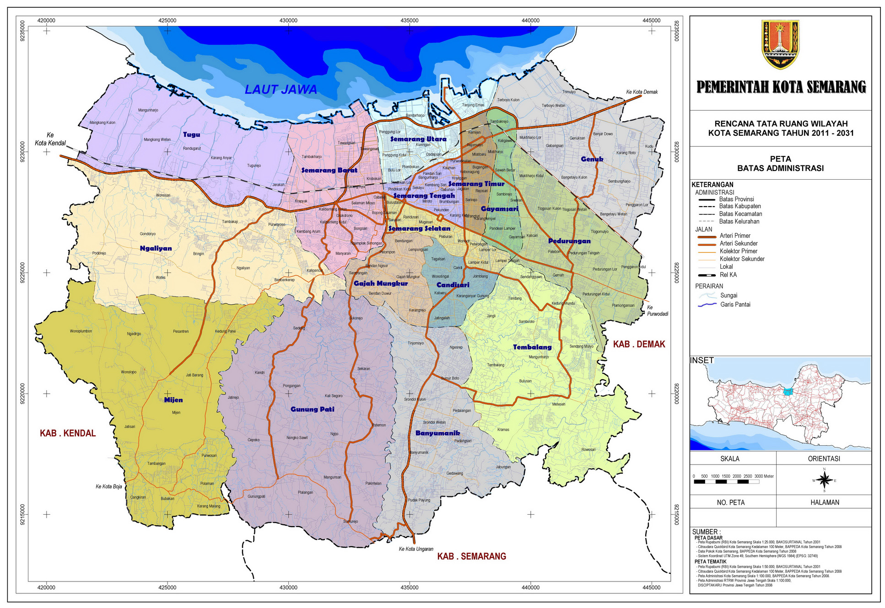

Semarang adalah ibu kota Provinsi Jawa Tengah, Indonesia. Kota ini sekaligus menjadi Kota metropolitan terbesar kelima di Indonesia setelah Jakarta, Surabaya, Bandung, dan Medan. Sebagai salah satu kota paling berkembang di Pulau Jawa, Kota Semarang mempunyai jumlah penduduk sekitar 1,6 juta jiwa. Kawasan mega-urban Semarang yang tergabung dalam wilayah metropolitan Kedungsepur (Kendal, Demak, Ungaran, Kabupaten Semarang, Kota Salatiga, Kota Semarang dan Purwodadi, Kabupaten Grobogan) berpenduduk mencapai 7,3 juta jiwa, sekaligus sebagai wilayah metropolitan terpadat keempat di Pulau Jawa, setelah Jabodetabek (Jakarta), Gerbangkertosusilo (Surabaya), dan Bandung Raya. Dalam beberapa tahun terakhir, perkembangan Semarang yang signifikan ditandai pula dengan munculnya beberapa gedung pencakar langit yang tersebar di penjuru kota dan penataan kota dengan dibangunnya tempat - tempat ramah pejalan kaki. Perkembangan regional ini menunjukan peran strategis Kota Semarang terhadap roda perekonomian nasional.
